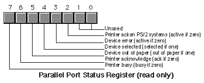
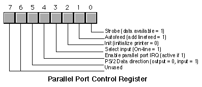

| Table of Content | Chapter Twenty One (Part 2) |
|
| Table of Content | Chapter Twenty One (Part 2) |
|
| CHAPTER
TWENTY ONE: THE PC PARALLEL PORTS (Part 1) |
||
| 21.1 -
Basic Parallel Port Information 21.2 - The Parallel Port Hardware 21.3 - Controlling a Printer Through the Parallel Port 21.3.1 - Printing via DOS 21.3.2 - Printing via BIOS 21.3.3 - An INT 17h Interrupt Service Routine 21.4 - Inter-Computer Communications on the Parallel Port |
Copyright 1996 by Randall Hyde
All rights reserved. Duplication other than for immediate display through a browser is prohibited by U.S. Copyright Law. This material is provided on-line as a beta-test of this text. It is for the personal use of the reader only. If you are interested in using this material as part of a course, please contact rhyde@cs.ucr.edu Supporting software and other materials are available via anonymous ftp from ftp.cs.ucr.edu. See the "/pub/pc/ibmpcdir" directory for details. You may also download the material from "Randall Hyde's Assembly Language Page" at URL: http://webster.ucr.edu Notes: This document does not contain the laboratory exercises, programming assignments, exercises, or chapter summary. These portions were omitted for several reasons: either they wouldn't format properly, they contained hyperlinks that were too much work to resolve, they were under constant revision, or they were not included for security reasons. Such omission should have very little impact on the reader interested in learning this material or evaluating this document. This document was prepared using Harlequin's Web Maker 2.2 and Quadralay's Webworks Publisher. Since HTML does not support the rich formatting options available in Framemaker, this document is only an approximation of the actual chapter from the textbook. If you are absolutely dying to get your hands on a version other than HTML, you might consider having the UCR Printing a Reprographics Department run you off a copy on their Xerox machines. For details, please read the following EMAIL message I received from the Printing and Reprographics Department:
We are currently working on ways to publish this text in a form other than HTML (e.g., Postscript, PDF, Frameviewer, hard copy, etc.). This, however, is a low-priority project. Please do not contact Randall Hyde concerning this effort. When something happens, an announcement will appear on "Randall Hyde's Assembly Language Page." Please visit this WEB site at http://webster.ucr.edu for the latest scoop. Redesigned 10/2000 with "MS FrontPage 98" using
17" monitor 1024x768 |
|
The original IBM PC design provided support for three parallel printer ports that IBM designated LPT1:, LPT2:, and LPT3:[1]. IBM probably envisioned machines that could support a standard dot matrix printer, a daisy wheel printer, and maybe some other auxiliary type of printer for different purposes, all on the same machine (laser printers were still a few years in the future at that time). Surely IBM did not anticipate the general use that parallel ports have received or they would probably have designed them differently. Today, the PC's parallel port controls keyboards, disk drives, tape drives, SCSI adapters, ethernet (and other network) adapters, joystick adapters, auxiliary keypad devices, other miscellaneous devices, and, oh yes, printers. This chapter will not attempt to describe how to use the parallel port for all these various purposes - this book is long enough already. However, a thorough discussion of how the parallel interface controls a printer and one other application of the parallel port (cross machine communication) should provide you with enough ideas to implement the next great parallel device.
There are two basic data transmission methods modern computes employ: parallel data transmission and serial data transmission. In a serial data transmission scheme one device sends data to another a single bit at a time across one wire. In a parallel transmission scheme, one device sends data to another several bits at a time (in parallel) on several different wires. For example, the PC's parallel port provides eight data lines compared to the serial port's single data line. Therefore, it would seem that the parallel port would be able to transmit data eight times as fast since there are eight times as many wires in the cable. Likewise, it would seem that a serial cable, for the same price as a parallel cable, would be able to go eight times as far since there are fewer wires in the cable. And these are the common trade-offs typically given for parallel vs. serial communication methods: speed vs. cost.
In practice, parallel communications is not eight times faster than serial communications, nor do parallel cables cost eight times as much. In generally, those who design serial cables (.e.g, ethernet cables) use higher materials and shielding. This raises the cost of the cable, but allows devices to transmit data, still a bit at a time, much faster. Furthermore, the better cable design allows greater distances between devices. Parallel cables, on the other hand, are generally quite inexpensive and designed for very short connections (generally no more than about six to ten feet). The real world problems of electrical noise and cross-talk create problems when using long parallel cables and limit how fast the system can transmit data. In fact the original Centronics printer port specification called for no more than 1,000 characters/second data transmission rate, so many printers were designed to handle data at this transmission rate. Most parallel ports can easily outperform this value; however, the limiting factor is still the cable, not any intrinsic limitation in a modern computer.
Although a parallel communication system could use any number of wires to transmit data, most parallel systems use eight data lines to transmit a byte at a time. There are a few notable exceptions. For example, the SCSI interface is a parallel interface, yet newer versions of the SCSI standard allow eight, sixteen, and even thirty-two bit data transfers. In this chapter we will concentrate on byte-sized transfers since the parallel port on the PC provides for eight-bit data.
A typical parallel communication system can be one way (or unidirectional ) or two way (bidirectional ). The PC's parallel port generally supports unidirectional communications (from the PC to the printer), so we will consider this simpler case first.
In a unidirectional parallel communication system there are two distinguished sites: the transmitting site and the receiving site. The transmitting site places its data on the data lines and informs the receiving site that data is available; the receiving site then reads the data lines and informs the transmitting site that it has taken the data. Note how the two sites synchronize their access to the data lines - the receiving site does not read the data lines until the transmitting site tells it to, the transmitting site does not place a new value on the data lines until the receiving site removes the data and tells the transmitting site that it has the data. Handshaking is the term that describes how these two sites coordinate the data transfer.
To properly implement handshaking requires two additional lines. The strobe (or data strobe) line is what the transmitting site uses to tell the receiving site that data is available. The acknowledge line is what the receiving site uses to tell the transmitting site that it has taken the data and is ready for more. The PC's parallel port actually provides a third handshaking line, busy, that the receiving site can use to tell the transmitting site that it is busy and the transmitting site should not attempt to send data. A typical data transmission session looks something like the following:
Transmitting site:
1) The transmitting site checks the busy line to see if the receiving is busy. If the busy line is active, the transmitter waits in a loop until the busy line becomes inactive.
2) The transmitting site places its data on the data lines.
3) The transmitting site activates the strobe line.
4) The transmitting site waits in a loop for the acknowledge line to become active.
5) The transmitting site sets the strobe inactive.
6) The transmitting site waits in a loop for the acknowledge line to become inactive.
7) The transmitting site repeats steps one through six for each byte it must transmit.
Receiving site:
1) The receiving site sets the busy line inactive (assuming it is ready to accept data).
2) The receiving site waits in a loop until the strobe line becomes active.
3) The receiving site reads the data from the data lines (and processes the data, if necessary).
4) The receiving site activates the acknowledge line.
5) The receiving site waits in a loop until the strobe line goes inactive.
6) The receiving site sets the acknowledge line inactive.
7) The receiving site repeats steps one through six for each additional byte it must receive.
By carefully following these steps, the receiving and transmitting sites carefully coordinate their actions so the transmitting site doesn't attempt to put several bytes on the data lines before the receiving site consumes them and the receiving site doesn't attempt to read data that the transmitting site has not sent.
Bidirectional data transmission is often nothing more than two unidirectional data transfers with the roles of the transmitting and receiving sites reversed for the second communication channel. Some PC parallel ports (particularly on PS/2 systems and many notebooks) provide a bidirectional parallel port. Bidirectional data transmission on such hardware is slightly more complex than on systems that implement bidirectional communication with two unidirectional ports. Bidirectional communication on a bidirectional parallel port requires an extra set of control lines so the two sites can determine who is writing to the common data lines at any one time.
The standard unidirectional parallel port on the PC provides more than the 11 lines described in the previous section (eight data, three handshake). The PC's parallel port provides the following signals:
| Pin Number on Connector | I/O Direction |
Active Polarity | Signal Description |
|---|---|---|---|
| 1 | output | 0 | Strobe (data available signal). |
| 2-9 | output | - | Data lines (bit 0 is pin 2, bit 7 is pin 9). |
| 10 | input | 0 | Acknowledge line (active when remote system has taken data). |
| 11 | input | 0 | Busy line (when active, remote system is busy and cannot accept data). |
| 12 | input | 1 | Out of paper (when active, printer is out of paper). |
| 13 | input | 1 | Select. When active, the printer is selected. |
| 14 | output | 0 | Autofeed. When active, the printer automatically inserts a line feed after every carriage return it receives. |
| 15 | input | 0 | Error. When active, there is a printer error. |
| 16 | output | 0 | Init. When held active for at least 50 msec, this signal causes the printer to initialize itself. |
| 17 | output | 0 | Select input. This signal, when inactive, forces the printer off-line |
| 18-25 | - | - | Signal ground. |
Note that the parallel port provides 12 output lines (eight data lines, strobe, autofeed, init, and select input) and five input lines (acknowledge, busy, out of paper, select, and error). Even though the port is unidirectional, there is a good mixture of input and output lines available on the port. Many devices (like disk and tape drives) that require bidirectional data transfer use these extra lines to perform bidirectional data transfer.
On bidirectional parallel ports (found on PS/2 and laptop systems), the strobe and data lines are both input and output lines. There is a bit in a control register associated with the parallel port that selects the transfer direction at any one given instant (you cannot transfer data in both direction simultaneously).
There are three I/O addresses associated with a typical PC compatible parallel port. These addresses belong to the data register, the status register, and the control register. The data register is an eight-bit read/write port. Reading the data register (in a unidirectional mode) returns the value last written to the data register. The control and status registers provide the interface to the other I/O lines. The organization of these ports is as follows:

Bit two (printer acknowledge) is available only on PS/2 and other systems that support a bidirectional printer port. Other systems do not use this bit.

The parallel port control register is an output register. Reading this location returns the last value written to the control register except for bit five that is write only. Bit five, the data direction bit, is available only on PS/2 and other systems that support a bidirectional parallel port. If you write a zero to this bit, the strobe and data lines are output bits, just like on the unidirectional parallel port. If you write a one to this bit, then the data and strobe lines are inputs. Note that in the input mode (bit 5 = 1), bit zero of the control register is actually an input. Note: writing a one to bit four of the control register enables the printer IRQ (IRQ 7). However, this feature does not work on all systems so very few programs attempt to use interrupts with the parallel port. When active, the parallel port will generate an int 0Fh whenever the printer acknowledges a data transmission.
Since the PC supports up to three separate parallel ports, there could be as many as three sets of these parallel port registers in the system at any one time. There are three parallel port base addresses associated with the three possible parallel ports: 3BCh, 378h, and 278h. We will refer to these as the base addresses for LPT1:, LPT2:, and LPT3:, respectively. The parallel port data register is always located at the base address for a parallel port, the status register appears at the base address plus one, and the control register appears at the base address plus two. For example, for LPT1:, the data register is at I/O address 3BCh, the status register is at I/O address 3BDh, and the control register is at I/O address 3BEh.
There is one minor glitch. The I/O addresses for LPT1:, LPT2:, and LPT3: given above are the physical addresses for the parallel ports. The BIOS provides logical addresses for these parallel ports as well. This lets users remap their printers (since most software only writes to LPT1:). To accomplish this, the BIOS reserves eight bytes in the BIOS variable space (40:8, 40:0A, 40:0C, and 40:0E). Location 40:8 contains the base address for logical LPT1:, location 40:0A contains the base address for logical LPT2:, etc. When software accesses LPT1:, LPT2:, etc., it generally accesses the parallel port whose base address appears in one of these locations.
[1] In theory, the BIOS allows for a fourth parallel printer port, LPT4:, but few (if any) adapter cards have ever been built that claim to work as LPT4:.
Chapter Twenty Two: The PC Parralel
Ports (Part 1)
30 SEP 1996